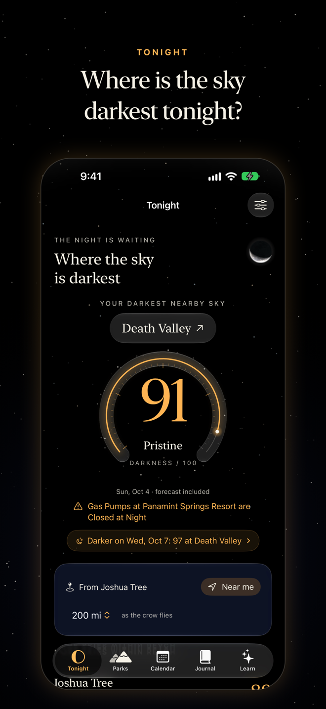
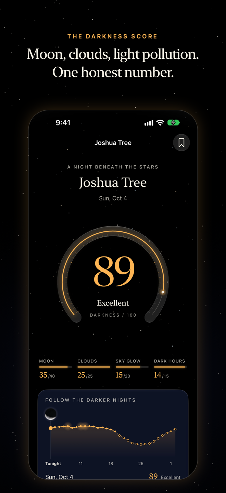
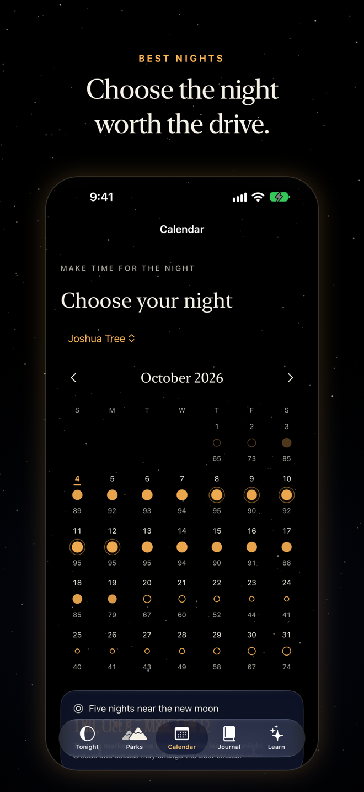
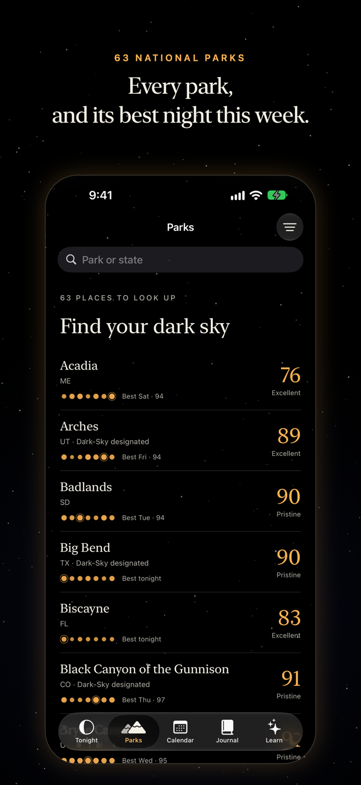
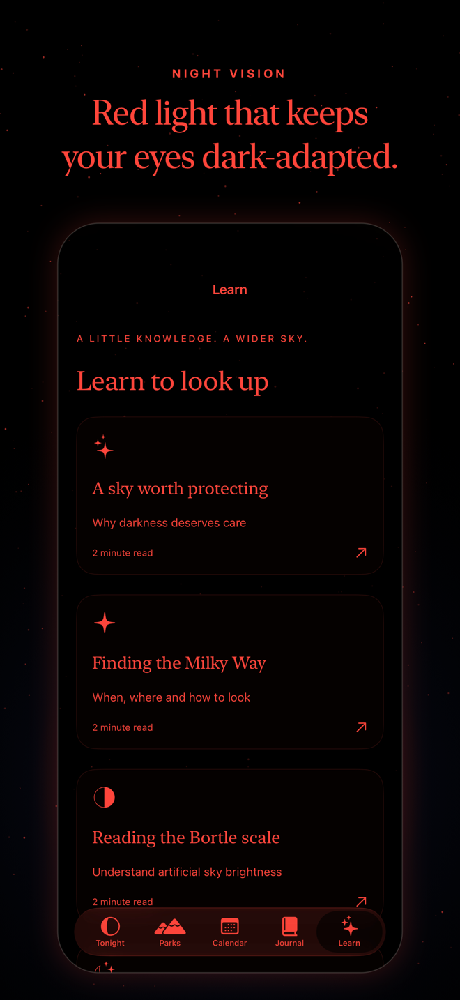
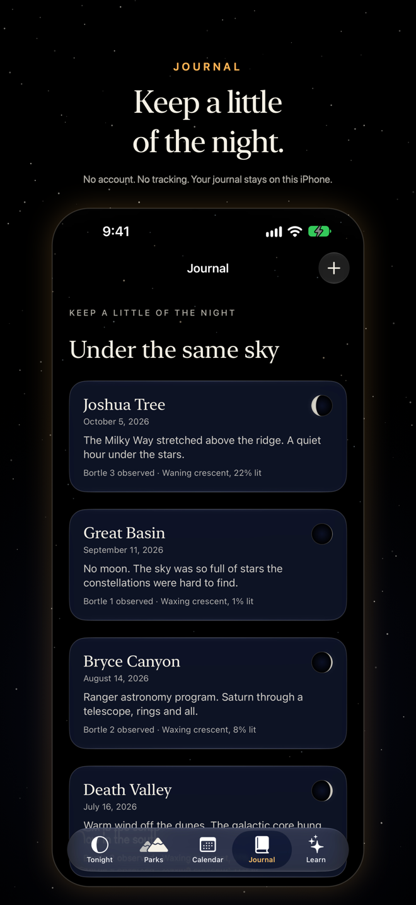

Nyx · Press kit
Plan a darker night.
Nyx is a free iPhone app that tells you where and when the sky will be darkest across the 63 US national parks.
The story
Millions of people drive for hours into a national park to see the Milky Way, and some of them arrive under a bright Moon, a cloud deck or the glow of a distant city. No app answered the one question that decides the trip: where should I go, and on which night? Nyx, named for the Greek goddess of night, joins the Moon, cloud forecasts, estimated sky glow and the length of true darkness into a single Darkness Score for each park and night, and explains the score in four plain parts. It runs its astronomy on the iPhone, so the Moon, twilight and the Milky Way core work offline. It says what it does not know. It has no account, no advertising and no tracking, and it is built for the people who use it: eyes adapted to the dark, and eyes, ears and hands that use VoiceOver, larger text and haptics. One developer made it.
Fact sheet
- Name
- Nyx: Dark Sky Planner (the Home Screen name is Nyx)
- Developer
- Hardik Pakhale, an independent developer
- Price
- Free. No subscriptions, advertising or in-app purchases.
- Platforms
- iPhone, iOS 26.0 and later. Version 1.1 is planned to add iPad, Apple Watch and Apple Vision Pro.
- Languages
- English. Spanish is planned for 1.1.
- Category
- Travel; Weather
- Privacy
- App Store privacy label: Data Not Collected. No account, no analytics, no tracking. Location stays on the device.
- Launch date
- To be announced
- Coverage
- The 63 US national parks, with named viewing spots and park-local times
- Website
- harrypakhale98.github.io/Nyx
- Privacy policy
- privacy.html
- Support
- support.html
- Press contact
- harry.pakhale98@gmail.com
The launch date and the 1.1 list will be updated here at release. Until then, text about 1.1 describes what is planned.
Feature highlights
Nyx 1.0
- One Darkness Score per park per night, with a four-part breakdown (Moon, clouds, sky glow, true darkness).
- A calendar with every night drawn as a tiny sky and the five-night new moon window marked, and a thirty-night time river whose Moon morphs as you scrub.
- Closures beside the score. Nyx shows National Park Service alerts next to the number, because a dark sky is no use behind a closed road.
- A real Moon and a real sky. The Moon is rendered on the device from NASA's lunar map, lit and oriented as the park sees it. The sky behind each screen is the park's actual sky for that night.
- Night-vision mode renders the whole app in red, native controls included, with contrast measured and published.
- Offline first: Moon, sun and twilight, the park library, calendar, journal and saved parks need no connection. Widgets, a Control Center control, Siri and Shortcuts, local reminders and a private journal with selected photos.
Planned for 1.1
- What's up tonight: the Milky Way core timed for each park, planets, meteor showers with a rate estimate, lunar eclipses.
- An honest forecast: three weather models compared, cloud layers, dew, cold and wind, wildfire smoke beside the score.
- Field mode: a red, dimmed screen with a countdown to true darkness, a dark-adaptation clock, a compass sky that shows where to look without a camera, a Live Activity and Dynamic Island, alarms for true darkness and the core's rise, a Stargazing Focus and a Control Center control.
- Apple Watch (red-first countdown and complications) and Apple Vision Pro (stand under a park's real sky on a chosen night), plus iPad and Spanish.
- Sky glow per viewing spot estimated from NASA Black Marble night-lights data, with the direction of nearby city light; step-free viewing spots; a trip planner; a personal constellation journal.
The science
The Darkness Score, 0 to 100
| Part | Weight | What it measures |
|---|---|---|
| Moon | 40% | Illumination, plus a bonus scaled by the share of the dark window during which the Moon is below the horizon |
| Clouds | 25% | Forecast cloud cover averaged over the park's dark window, inverted |
| Sky glow | 20% | Estimated artificial sky brightness (a Bortle-class estimate for each park; in 1.1, estimated from NASA night-lights data at each viewing spot) |
| True darkness | 15% | Length of astronomical darkness, normalized against a ten-hour maximum |
Bands: 90 and above Pristine, 75 Excellent, 60 Good, 40 Fair, below 40 Poor. Beyond the roughly sixteen-day forecast horizon, Nyx drops the cloud term, scales the remaining weights to 100 and labels the night "moon and darkness only". Where the sky never gets truly dark (Alaska in summer) the darkness and Moon-bonus terms are zero and the night is capped below 40. Meteor showers, planets, the Milky Way core, smoke and model agreement are shown beside the score. They never change it.
Accuracy, stated openly
Moon position uses a truncated Meeus lunar theory; sun and twilight use NOAA approximations. Against U.S. Naval Observatory references on the samples tested, solar rise and set were within 0.5 minute and lunar rise and set within 3.7 minutes. Nyx tells people to allow roughly 15 minutes for lunar timing, and more at difficult horizons. Light-pollution classes are conservative estimates, not measurements. A score never confirms clear skies or open roads.
Data sources and credits
- Weather: Open-Meteo, licensed CC BY 4.0.
- Smoke and haze: Copernicus Atmosphere Monitoring Service (CAMS), via Open-Meteo, CC BY 4.0.
- Sky glow: NASA Black Marble nighttime lights (VNP46A4), public domain; method after Roman and others (2018).
- Stars: the Yale Bright Star Catalogue, as distributed by NASA HEASARC.
- The Moon: NASA's CGI Moon Kit, built from Lunar Reconnaissance Orbiter data.
- Meteor showers: the International Meteor Organization's meteor shower calendar.
- Lunar eclipses: predictions by Fred Espenak, NASA/GSFC.
- Planets: Paul Schlyter's low-precision orbital elements, computed on the device.
- Parks, alerts and ranger programs: the National Park Service.
Nyx is not affiliated with or endorsed by the National Park Service or NASA, and no organization named here endorses Nyx. All astronomy is computed on the iPhone; the three network services (National Park Service, Open-Meteo forecasts, Open-Meteo air quality) are each switchable in the app, and receive the public coordinates of national parks, never the device's location.
Accessibility
- VoiceOver: every custom control, including the dial, Moon, time river, sky arc and calendar nights, has a spoken summary of its data. Planned for 1.1: audio graphs so a month of darkness can be heard, and a spoken list as the default for the compass sky.
- Text: Dynamic Type through the largest accessibility size. Layouts reflow instead of shrinking; the river becomes a native stepper.
- Display: Reduce Motion, Reduce Transparency, Increase Contrast and Smart Invert are handled; the app is dark by design, with a red mode for night-adapted eyes.
- Touch and feel: haptics for the river and the score. Planned for 1.1: haptics that follow the Moon's phase.
- Evidence: Apple's automated accessibility audit passes on every screen in both palettes on iOS 26 and iOS 27, and contrast ratios are published. Testing on physical devices with assistive technologies and with people who use them is the stated next step, not a completed one.
- Planned for 1.1: step-free viewing spots sourced from park accessibility pages, and Spanish.
Screenshots
Real renders from the app, 1320 × 2868 px. Select a picture for the full-size file. Scores come from the shipping engine; the journal entries are illustrative sample content.

Tonight 
The score and its four parts 
Calendar and new moon window 
Parks 
Night-vision mode 
Journal


The Moon in these images is drawn from NASA data and the stars from the Yale Bright Star Catalogue. Please do not add National Park Service or NASA marks to Nyx artwork. Screenshots of the 1.1 features (field mode, What's up tonight, Apple Watch, Apple Vision Pro, iPad) and the app icon are available on request.
About, in two sentences
Nyx: Dark Sky Planner is a free iPhone app that scores the 63 US national parks night by night for the darkest sky, using the Moon, clouds, estimated sky glow and the length of true darkness. It has no account, no advertising and no tracking, and it was built by one developer for night-adapted eyes and for people who use assistive technologies.
Contact
Hardik Pakhale · harry.pakhale98@gmail.com. Review codes, interviews and extra assets on request.